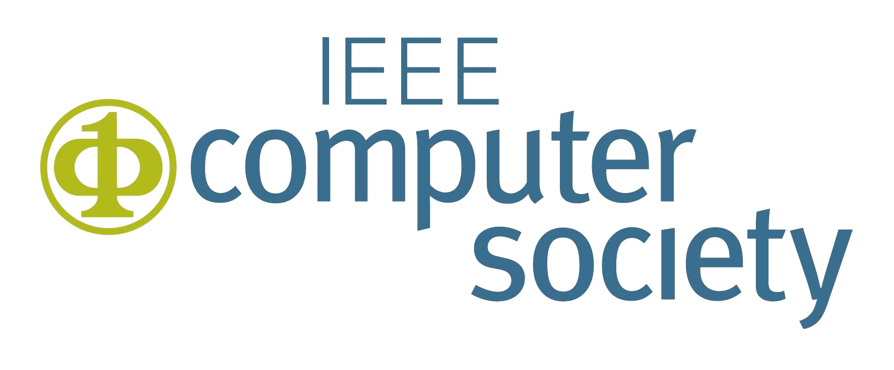
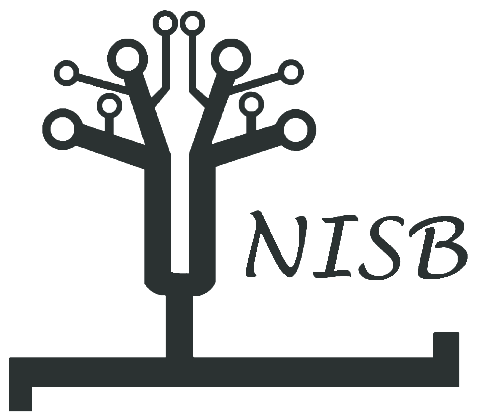
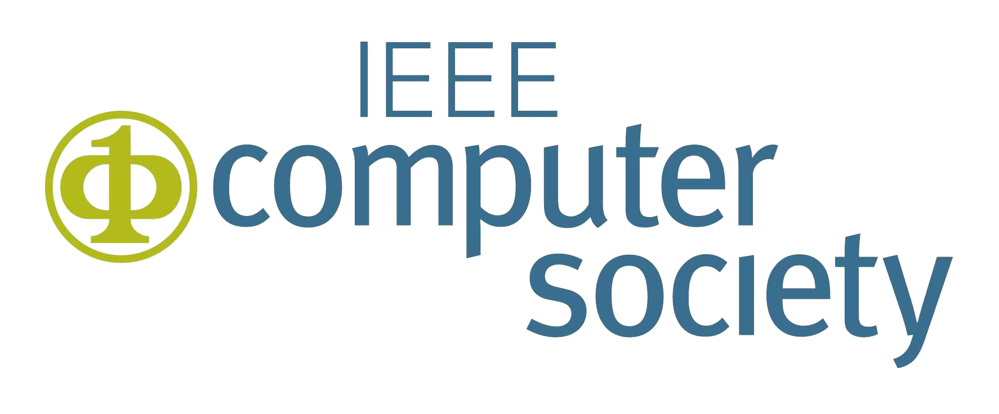
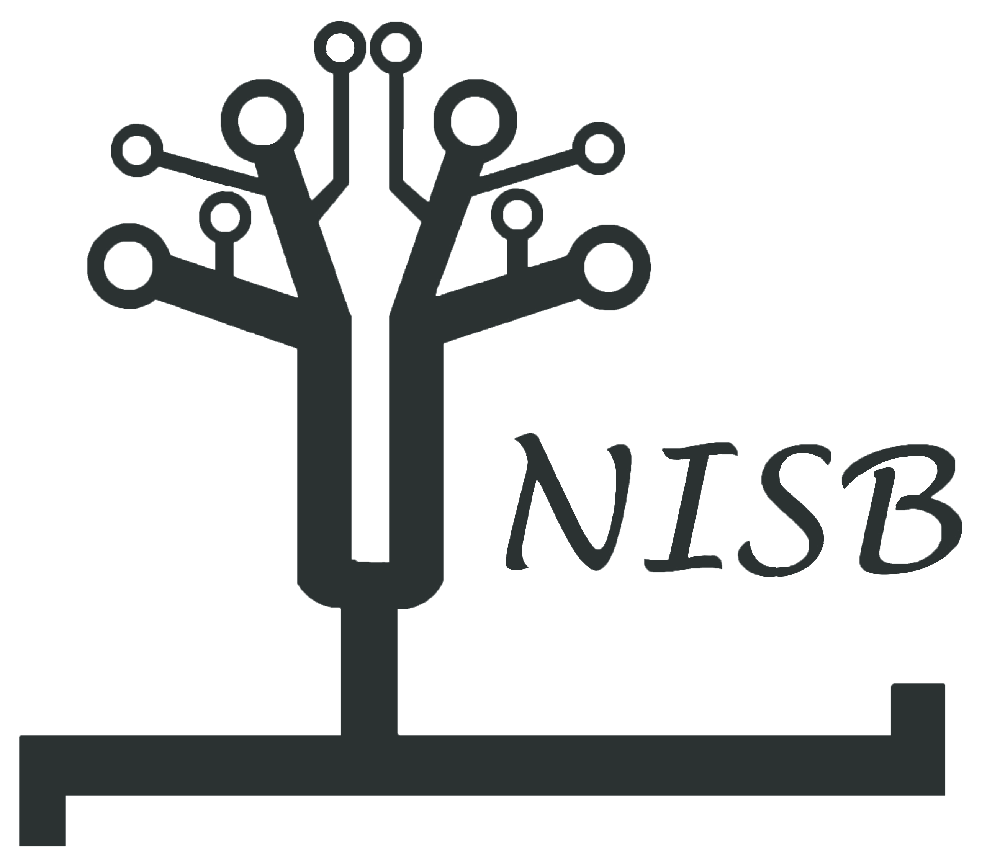

About
IEEE Computer Society
The IEEE Computer Society is the world's leading membership organization dedicated to computer science and technology. Serving more than 60,000 members, the IEEE Computer Society is the trusted information, networking, and career-development source for a global community of technology leaders that includes researchers, educators, software engineers, IT professionals, employers, and students.
The IEEE Computer Society sponsors more than 200 technical conferences and events each year, including the industry-oriented "Rock Stars" series, all over the world, aimed at research and industry professionals. Our publications are peer-reviewed, indexed, and authored by technology thought leaders worldwide, and include 17 scholarly journals and 13 magazines featuring the latest technology trends. We also offer cutting-edge products such as the myComputer app (available for iOS or Android), that provide unprecedented user-driven access to our content, and our Digital Library with more than 550,000 articles and papers spanning the full spectrum of computer science and technology.
IEEE Bangalore Section
IEEE Bangalore section is one of the most prestigious sections n India known for conducting a wide range of events and workshops. IEEE Bangalore Section is recognised as an Outstanding Section for Membership Recruitment and Retention Performance – 2016.
It has 14 Society Chapters and two affinity groups.The Chapters carry out focused activities in the respective area by way of conducting technical talks under DLT, Seminars, Tutorials, workshops etc. Apart from the Chapters two affinity groups viz. the Graduate of the Last Decade (GOLD) and Women In Engineering (WIE) also carry out related activities. IEEE Bangalore and IEEE Princeton and Central New Jersey Sections had signed a MoU as sister sections.There are about 53 Student Branches in Karnataka in the various graduate and postgraduate engineering colleges and these units conduct technical talks, TechFests etc. A dedicated Student Paper contest, Technical Colloquium and Student Leadership Workshop are some of the major events conducted under Student activities of the Section.
NIE IEEE Student Branch
NISB is the IEEE student branch of National Institue of Engineering. It is one of the largest and most active student branches of Karnataka.Having been active for a decade, we have been honoured and humbled with numerous awards and accolades over time, including "The Best Student Chapter" of Region 10 Bangalore. We organize and host a wide range of technical workshops and events. We have our odd sem fest ADROIT and even sem fest ANKURA. Electronika , IPL are few our signature events.
The National Institute of Engineering
The National Institute of Engineering (NIE), one of the oldest private engineering colleges of the country, was started in the year 1946. The engineers, professors and other good men who labored to establish NIE are many. Their contribution to the cause of technical education is equally noble, whether it has been large or small, whether by money or service. NIE owes it glory to all these Men with a Mission. Among the sixteen eminent founders, three engineers Sri S.Ramaswamy, Retd. Superintending Engineer, Mysore PWD, Sri D.V.Narasimha Rao, Retd. Chief Engineer, Mysore State Railways and Sri T.Rama Rao, Retd. Executive Engineer of Mysore PWD, took lead in establishing NIE, the Temple of Learning. It has completed 69 years of fruitful existence.

 


